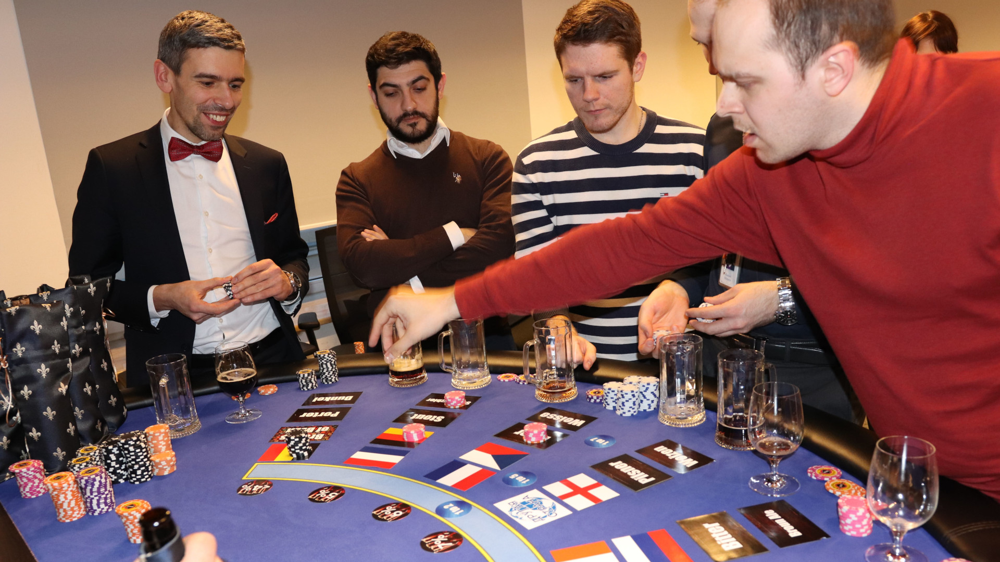

Пивное казино в Санкт-Петербурге
В стоимость локации входит:
- стол со специализированной разметкой
- 4 часа работы сомелье
- 30 бутылок крафтового пива (по 0,5 л)
- бокалы и пивные кружки
- аксессуары для игры: фишки, игровые деньги
- монтаж-демонтаж оборудования
- доставка по Санкт-Петербургу
Дополнительно оплачивается:
- изготовление игровых денег с вашим дизайном
- выезд за город
R 44 000
/ за 3-3.5 часа
Пивное казино — это абсолютно новый интерактив, который отлично подойдет для зоны вэлком, мальчишника, корпоративного мероприятия в офисе или на природе. Аттракцион может стать красивым дополнением для гангстерской или ковбойской вечеринки, а в сочетании с техасским холдемом преобразит мужской праздник на 23 Февраля или на день рождения. На вэлкоме это может быть самостоятельная автономная локация, а в купе, например, со спортивным покером, мы можем вам предложить покерный турнир и дегустацию крафтового пива.
Сегодня существует большое многообразие сортов пива и брендов, производящих его, вот на этом и будет построена вся интрига))

Механика пивного казино
- Мы закупаем 30 бутылок крафтового пива (по 0,5 л). Этого хватает приблизительно для 20 участников дегустации.
- В назначенный час привозим оборудование и весь необходимый реквизит. Монтируем площадку.
- Как только за игровым столом соберутся гости, пивной сомелье расскажет правила игры и погрузит в удивительный мир пива, раскроет секреты его приготовления, расскажет о известных сортах и видах, брендах и традициях его приготовления.
- Участники должны продегустировать напиток.
- После бурного обсуждения каждый игрок делает ставки на игровом поле: необходимо угадать страну-производителя напитка, марку, сорт, вид, крепость. Затем сомелье показывает образец, оплачивает выигрыши и забирает проигранные ставки.
- Игра проходит в 6-7 раундов. Количество раундов зависит от того, сколько образцов пива участвует в дегустации.
- По окончании всех раундов победитель турнира получает приз либо игровые деньги (фан-мани можно использовать для покера или на рулетке, если пивное казино проходит в рамках общего мероприятия).
Если вам хочется чего-то нового и необычного, а вы до сих пор не придумали, как развлечь своих коллег, воспользуйтесь услугами выездного казино. Мы украсим ваш вечер интересной историей и редкими сортами этого удивительного напитка!
История производства пива
Об истинном происхождение пива можно только догадываться. Семейство напитков, обычно называемых «пивом», варилось веками. История пивоварения насчитывает более 7000 лет. Первые упоминания о «пенном напитке» мы можем найти у древних шумеров, вавилонян и ассирийцев. Это кажется невероятным, но этим древним народам были известны рецепты приготовления около 70 сортов пива.
«Баппир» — так называли они свой напиток — дословно можно перевести как «пивной хлеб». Пиво на древнем востоке набирало такую популярность, что из кустарного производства переросло в промышленные масштабы и изготовлялось на продажу в больших объемах. Об этом свидетельствуют древние артефакты, а именно колонна Вавилонского царя Хаммурапи, в которой содержится информация о ценах и наказание за их нарушение.
С Древнего Востока пиво, благодаря торговле, перекочевало в Африку, где получило название «хек». Египтяне в целях усовершенствования напитка и получения новых сортов и вкусов стали в процессе приготовления добавлять различные пряности. В древнем Египте пиву приписывали целебное и даже магическое свойство. Из Египта пиво распространилось по Северной Африке, а дальше в Европу и на Кавказ.
В Германии пивоварение появилось во II-V вв. н. э., делали его из ячменя с добавлением вереска. Из Германии этот напиток попал уже в Скандинавию и Англию, спустя несколько веков — распространился по всему миру. Английское слово «пиво», по-видимому, происходит от кельтского слова «beor», которое относится к солодовому напитку, приготовленному монахами в монастыре Северной Галлии.
Во времена средневековья популярность пива возросла настолько, что право заниматься пивоварением получили монастыри. В средние века монастыри были ведущими производителями пива. И это пошло на пользу напитку, т. к. монахи были людьми образованными и могли вести записи и экспериментировать, к процессу варения подходили системно. Это дало большое количество сортов и повысило качество, а обмен информацией между монахами и монастырями помог отшлифовать технологию приготовления. Некоторые монастыри наладили дело настолько, что это стало хорошим бизнесом, а от полученных денег казна и материальное благополучие их быстро росло. Различие между элями, лагерами и более темным пивом стало появляться во французских и ирландских писаниях в XIII веке. Общепринято, что современные сорта пива, которые мы знаем сегодня, датируются 1600-ми годами.
К началу XIV в. началось частное или мануфактурное производство пива. В это время были заложены старейшие чешские и немецкие пивоварни. Пивоварение уже стало процветающей индустрией в Европе, когда в 1776 г. Соединенные Штаты объявили о своей независимости. Европейские иммигранты привезли свои навыки пивоварения в Америку и основали процветающую пивную промышленность.
Пиво в бутылках было представлено в 1875 году пивоваренной компанией Joseph Schlitz в Милуоки, штат Висконсин. А в 1930 году появились консерванты, позволяющие сохранять напиток очень длительное время. Долгая история и эволюция, технический прогресс, индустриальная революция и популярность напитка привели к тому, что на сегодняшний день мы имеем большое количество сортов и множество ценителей напитка по всему миру.
Возможно, вам будет интересно)) Подробный фотоотчет с проведенного нами мероприятия: